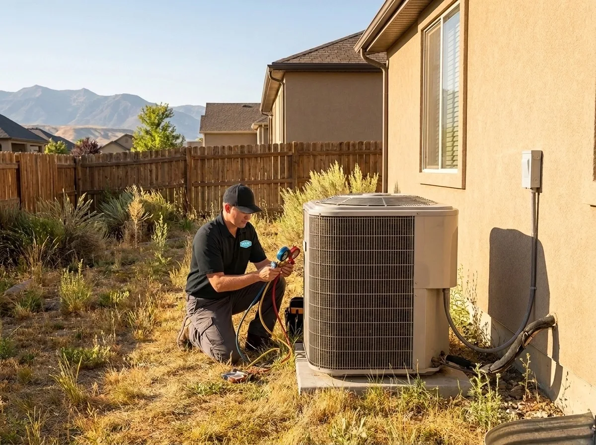
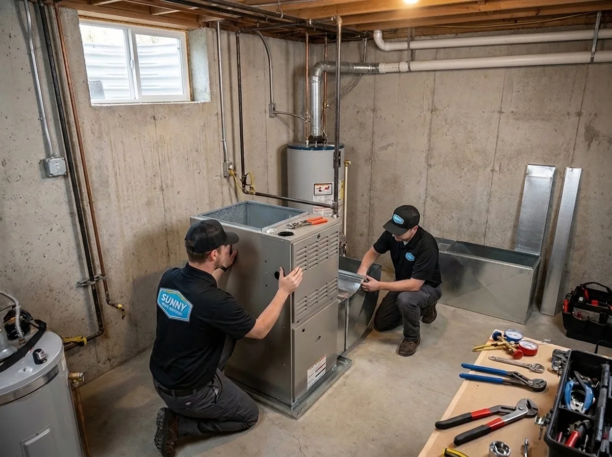
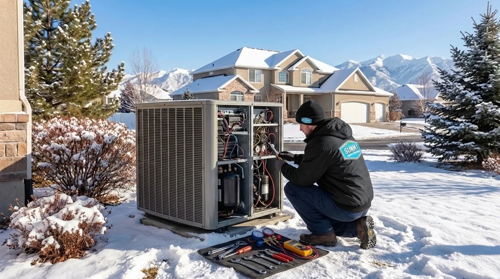
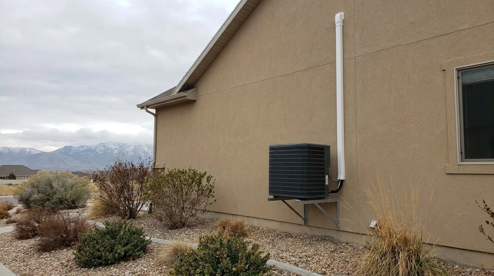

385.853.8116

Same-Day Response. Upfront pricing. Certified technicians.

At Sunny Home Services, we take pride in servicing the systems you rely on at home every day. We understand the issues homeowners face with their plumbing, heating, and cooling in Kearns, Utah, and have the knowledge and skills to fix, replace, install, and maintain these systems year-round.
We provide a full range of HVAC services in Kearns, UT, and surrounding areas, helping homeowners keep their heating and cooling systems running safely, efficiently, and reliably, even in the most extreme weather. Our heating and air conditioning services include:

Kearns’ hot, dry summers are great when you’re spending the day at Sunset Beach, but that feeling can change if your home is just as hot as outside. We help you beat the heat at home with a full range <a href="coming-soon.html">of air conditioning services in Kearns</a>, including repairs, maintenance, installation, and replacement.
Learn More ›
Kearns’ freezing winters mean a functioning heater is more than a luxury. We keep these essential systems running through even the toughest <a href="coming-soon.html">winters with our Kearns heating services</a>. Get in touch for furnace repairs, installations, replacements, and the annual service your system needs.
Learn More ›
Heat pumps are on the rise in Kearns because of their exceptional energy efficiency and flexible heating and cooling. Whether you want to invest in a new heat pump to lower energy bills, repair an existing one, or complete essential heat pump maintenance, our team is here to help.
Learn More ›
Ductless mini-splits are great for cooling small parts of your home that existing ductwork doesn’t reach. Count on Sunny Home Services to install, repair, replace, and maintain these small but mighty systems.
Learn More ›Indoor air quality (IAQ) systems can help keep harmful pollutants and contaminants, such as wildfire smoke particles, dust, heavy metals, and smog, out of your home. Our team can help you choose and install these systems and keep them running smoothly throughout their lifespan.
Learn More ›Considering the extreme weather in Kearns, Utah, HVAC repairs sometimes can’t wait until the next business day. That’s why we offer 24-hour heating and cooling repair services, so you always have someone to call in an emergency. Contact our team day or night if your system shuts down, you hear loud banging from your HVAC system, you suspect a refrigerant or gas leak, or anything else that puts your safety at risk.

Over the years of providing repairs and HVAC maintenance in Kearns, UT, we’ve noticed a few issues that local homeowners face more often than others, such as:
We always try to repair HVAC systems when we can, but at a certain point, investing in a new, reliable, efficient unit will save you money. Here are the signs that your system needs to be replaced:
Our team also provides top-of-the-line plumbing services in Kearns, UT, to keep your home’s water and drainage systems running smoothly and safely. Our services include:
We provide fast, permanent drain cleaning that addresses the source of the issue, not just a quick fix. Whether you have one slow drain or a total blockage throughout your home, our local plumbers in Kearns, UT, can handle it quickly and carefully.
Learn More ›A failing water heater can significantly affect your daily life, so address any issues as soon as possible. <a href="coming-soon.html">Our Kearns plumbers</a> can help you repair, replace, or maintain your system as needed.
Learn More ›If you’re interested in the high efficiency and near-limitless hot water supply a tankless water heater offers, we’re here to help. Our team can help you choose, size, and install a modern tankless water heater that will serve you for years to come.
Learn More ›
A hidden leak can devastate your home much faster than you may realize. Instead of waiting for the leak to cause mold growth, structural damage, and other problems, contact your local plumbers in the Kearns area to quickly and accurately find the leak and ensure a complete repair.
Learn More ›Sewer line issues can become unpleasant quickly, so having a reliable plumber on call is always a good idea. Our team can help with sewer line repairs, replacements, and inspections to keep your home safe and hygienic.
Learn More ›For stubborn drain clogs, mechanical clearing methods aren’t always sufficient. In these cases, we may use hydro jetting, which uses high-pressure water to blast away clogs and intruding tree roots without damaging the surrounding pipe.
Learn More ›If you’re looking to improve the taste, smell, appearance, and overall quality of your water, we’re the top plumbing company near you to help. We provide whole-home water filtration systems that eliminate potential contaminants (such as heavy metals, bacteria, viruses, harmful chemicals, and more) from your home water supply.
Learn More ›
Kearns’ unique climate affects plumbing systems in a few particular ways, such as:
Plumbing and HVAC services can be expensive, especially if you need emergency plumbing services near Kearns, UT, or have to replace your air conditioner unexpectedly. To help make the services you need more accessible, we offer flexible, affordable financing on larger services and regularly provide special offers and discounts.

Homeowners in Kearns choose our team for a number of reasons, including:

Whether you need a quick HVAC repair, emergency plumbing support, routine maintenance, or anything in between, the team at Sunny Home Services has you covered. With comprehensive home cooling, heating, and plumbing services in Kearns, Utah, we’re your go-to home services team. Contact us to learn more and schedule a service appointment.